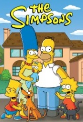

L'attaque des titans
Dans un monde ravagé par des titans mangeurs d’homme depuis plus d’un siècle, les rares survivants de l’Humanité n’ont d’autre choix pour survivre que de se barricader dans une cité-forteresse. Les humains n’ont pas aperçu de titans aux abords de leur ville depuis plus de cent ans. Eren, le héros de ce manga, et sa sœur adoptive Mikasa vont pourtant être témoin de la mort de leur mère lorsque qu’un titan spécial encore plus grand que les précédents apparaît pour détruire le mur, le Titan colossal. Eren décide alors de prendre sa revanche et de tuer tous les Titans du monde en entrant dans l’escouade d’exploration qui n’est autre que la section d’élite des soldats de l’humanité.
En savoir plus
Death note
Raïto Yagami est un lycéen japonais extrêmement doué, malheureusement victime d'une vie ennuyante dans ce monde qu'il décrit comme perverti par le pouvoir et l'argent. En 2006, il trouve un carnet titré "Death Note" par terre. Le Death Note est une création de Dieu de la Mort et a le pouvoir d'annihiler quiconque voit son nom écrit dedans. Raïto décide de prendre le Death Note et en devient le propriétaire dans le but d'éradiquer toute forme de mal de ce monde. Mais après la mort inexpliquée de plusieurs criminels, il devient lui-même un criminel poursuivi par la police japonaise et par un mystérieux détective nommé "L". Celui-ci découvre le secret de Raïto et s'ensuit alors pleins de péripéties.
En savoir plus
Naruto
Naruto est de retour à Konoha trois ans après son voyage d'entraînement avec Jiraiya. Konoha n'a presque pas changé. Notre héros retrouve une Sakura plus forte, un Kakashi toujours fidèle à lui-même, et d'autres compagnons, mais les retrouvailles seront de courte durée. Akatsuki reprend aussi du service en sortant les grands moyens pour exécuter ses plans. Naruto et les autres équipes sont dépêchés pour les contrer, un bon moyen pour voir les résultats des entraînements. Tout au long des ses aventures, Naruto devra faire face à divers périples et choix bien plus difficiles. Il devra fournir plus d'efforts et changer d'attitude pour protéger ses amis et surtout espérer ramener Sasuke...
En savoir plus
One piece
Gold Roger est le seigneur des pirates. A sa mort, une grande vague de piraterie s'abat sur le monde. Ces pirates partent à la recherche du One Piece, le fabuleux trésor amassé par Gold Roger durant tout sa vie.
En savoir plus
South park
South park suit les exploits de garçons, Stan, Kyle, Kenny et Eric dans la ville tranquille de South Park. Les quatre garçons font face aux défis de grandir entourés de personnes tous plus folles les unes que les autres.
En savoir plus

The Simpsons
Les Simpson sont une famille déjanté où on peut suivre Homer, le père alcoolique, Marge sa femme qui ne supporte pas de le voir comme ça, sans oublié Bart, Lisa et Maggie ses enfants au caractère totalement opposés.
En savoir plus